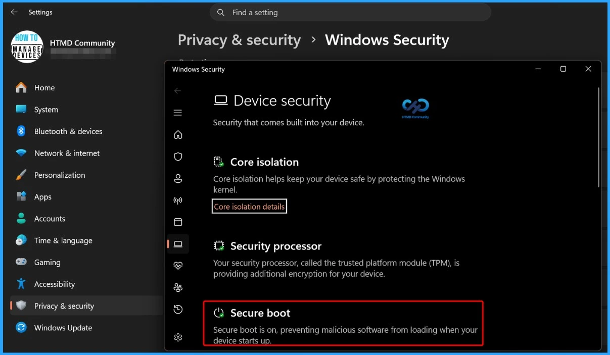
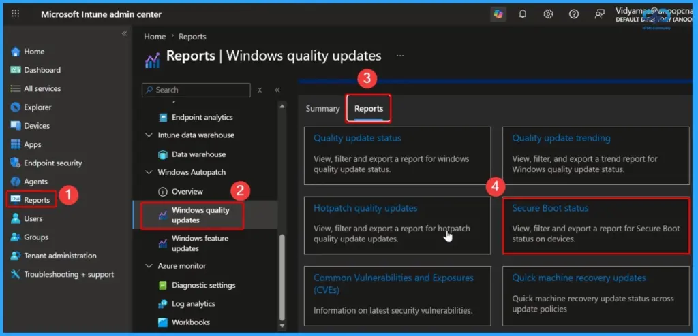

Key Takeaways
- BitLocker Recovery Prompts After KB5094126
- Issue Observed on HP EliteDesk 800 G6
- Secure Boot Update Not Fully Applied
- Manual BIOS Update Resolves the Issue
- Update the HP BIOS to the latest supported version.
- Enable the Windows UEFI CA 2023 certificate in the BIOS.
- Use the Intune Secure Boot report to identify affected devices.
- If necessary, temporarily suspend BitLocker during remediation and re-enable it afterwards.
BitLocker Prompt Issue After June Patch KB5094126 Secure Boot UEFI 2023 Certificate Update! After deploying the June 2026 Windows update (KB5094126), some HP EliteDesk 800 G6 devices began prompting for the BitLocker recovery key after every reboot. Based on our investigation, the Secure Boot UEFI 2023 certificate update does not appear to be fully applied on the affected devices, with the UEFI2023Status registry value remaining unchanged and Event ID 1801 indicating the update is incomplete.
Table of Content
BitLocker Prompt Issue After June Patch KB5094126 Secure Boot UEFI 2023 Certificate Update
Manually enabling the Windows UEFI CA 2023 certificate in the BIOS resolved the issue by stopping the BitLocker recovery prompts and successfully updating the Secure Boot status. However, this manual approach is not practical for enterprise environments.
| Category | Details |
|---|---|
| Issue | Devices prompt for the BitLocker recovery key after every reboot. |
| Affected | June 2026 Windows Update KB5094126, which includes the Secure Boot UEFI 2023 certificate update. |

Secure Boot UEFI 2023 Certificate Update Fails to Complete
On the affected devices, the Secure Boot UEFI 2023 certificate update fails to complete. The HKLM\System\CurrentControlSet\Control\SecureBoot\Servicing\UEFI2023Status registry value remains unchanged, and Event ID 1801 indicates that the Secure Boot certificate is available but has not been fully applied to the firmware. During testing, manually enabling the Windows UEFI CA 2023 certificate in the BIOS resolved the issue and allowed the Secure Boot update to complete successfully.
Update the HP BIOS
Several users reported that HP BIOS version 2.25 was causing the BitLocker recovery issue, while upgrading to BIOS version 2.26 resolved it. If your affected HP devices are running an older BIOS version, update the BIOS first. This appears to fix the issue on many devices.
Enable the Windows UEFI CA 2023 Certificate
Some administrators confirmed that manually enabling the Windows UEFI CA 2023 certificate in the HP BIOS stopped the BitLocker recovery prompts. The certificate is already on the device, but is not being activated in the BIOS. Once it is enabled, BitLocker stops asking for the recovery key.
HP Has Acknowledged the Issue
Multiple users shared that HP has published a support document describing the BitLocker recovery loop on HP commercial devices. This indicates that the problem is not isolated to your environment. HP is aware that some devices can experience this issue.
BIOS Updates Are Important
One organisation managing 5,000 HP devices found that nearly 4,800 systems were running BIOS 2.25. They paused the rollout, upgraded the BIOS across their fleet, and then forced the certificate update. Large organisations are resolving the problem by updating the BIOS before continuing the Secure Boot certificate deployment.
Some users suggested using Microsoft’s registry method to force the certificate update. However, your testing showed that the certificate was already downloaded, but it was not being applied at the firmware level. Changing the registry may help if the certificate has not yet been installed. However, if Event ID 1801 shows the certificate is already available but not applied, the registry fix alone may not resolve the issue.
Use the Intune Secure Boot Report
Some administrators recommended using the Intune Secure Boot report to identify devices where the Secure Boot certificate update has not completed. The Intune report helps you quickly identify affected devices so you can target only those systems instead of checking every device manually.
- Open the Microsoft Intune admin center.
- Go to: Reports > Windows Autopatch > Windows quality updates > Reports > Secure Boot status

Temporary Workaround
Some organizations temporarily suspended BitLocker while updating the BIOS and Secure Boot certificates to prevent recovery prompts. This avoids repeated BitLocker recovery prompts during remediation, but it should only be used temporarily because it reduces device protection.
Need Further Assistance or Have Technical Questions?
Join the LinkedIn Page and Telegram group to get the latest step-by-step guides and news updates. Join our Meetup Page to participate in User group meetings. Also, join the WhatsApp Community and the Whatsapp channel to get the latest news on Microsoft Technologies. We are there on Reddit as well.
Author
Anoop C Nair is a Workplace Technology solution architect with 25+ years of experience. Microsoft Certified Trainer. Microsoft MVP from 2015 onwards for consecutive 11+ years! He is a blogger, Speaker, and Founder of HTMD Community and HTMD Conference. His main focus is on Device Management technologies like Intune, Windows, and Cloud PC. He writes about technologies like Intune, SCCM, Windows, Cloud PC, Entra, and Microsoft Security.